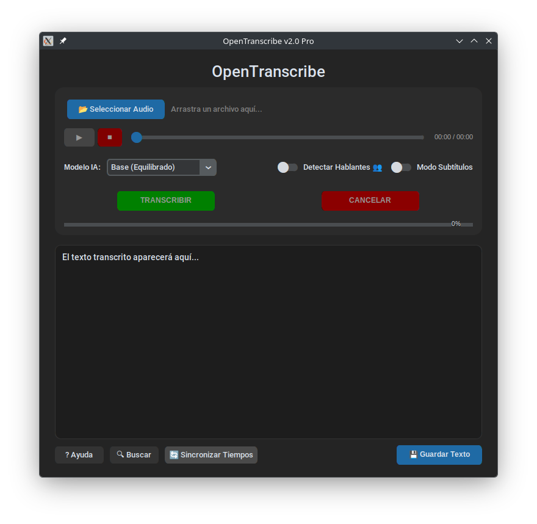

OpenTranscribe
OpenTranscribe es una aplicación de escritorio moderna y oscura para transcribir audio a texto utilizando la potencia de Whisper (C++).
Características Destacadas
- Transcripción Local y Privada: Procesa tus archivos de audio directamente en tu ordenador.
- Alta Precisión: Utiliza los modelos de Whisper de OpenAI para obtener transcripciones de alta calidad.
- Soporte para Varios Formatos: Exporta tus transcripciones a formatos como TXT, SRT o VTT.
- Interfaz Sencilla: Una interfaz limpia y fácil de usar para que te centres en tu trabajo.
Capturas de Pantalla

← Volver a la página principal